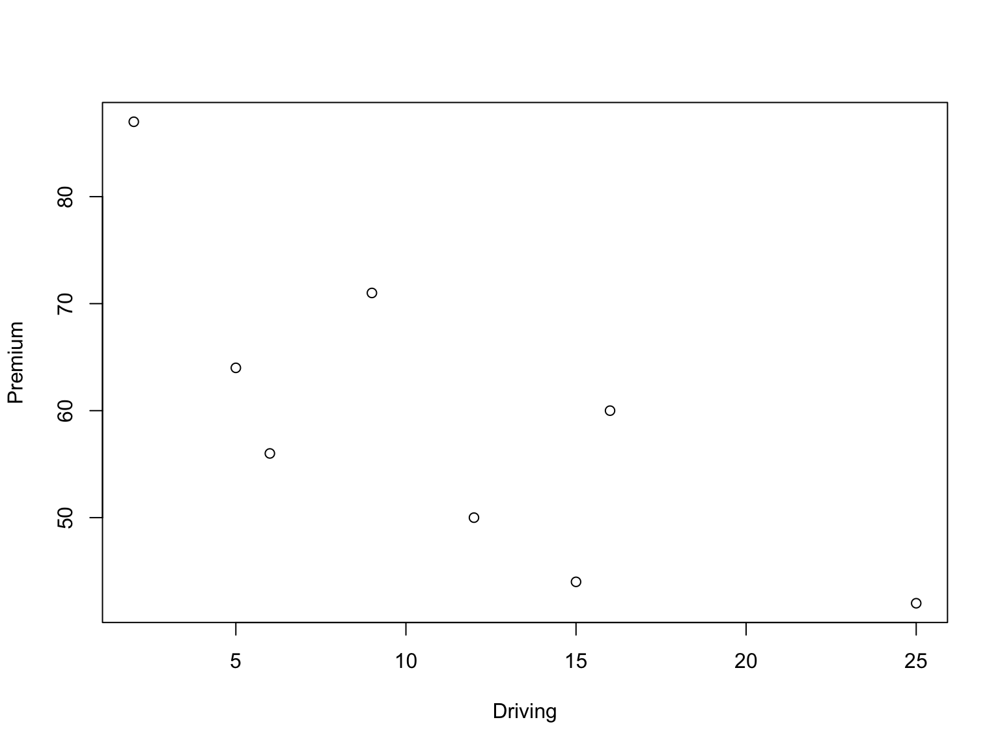
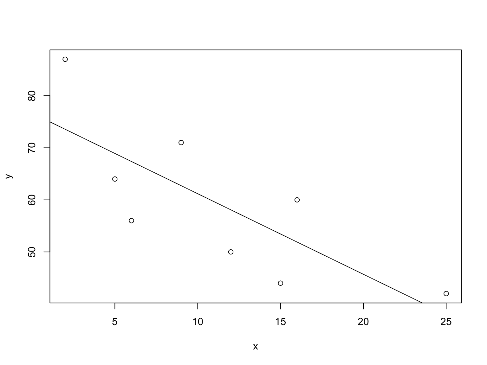
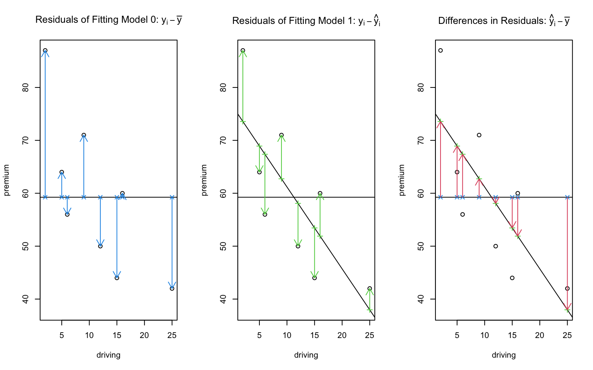
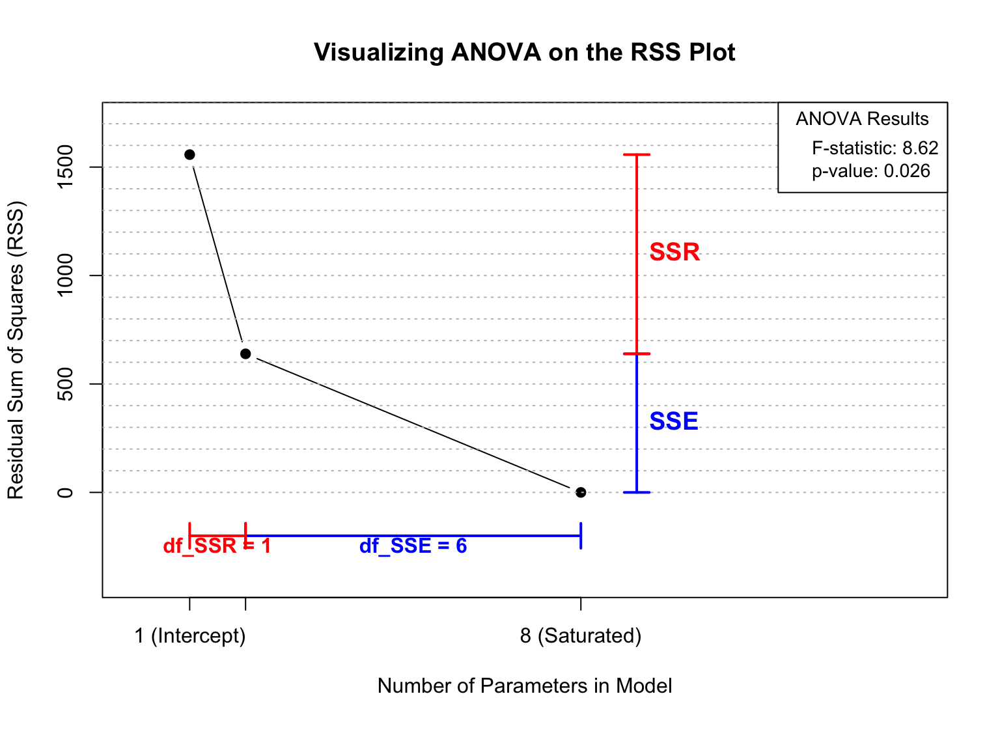
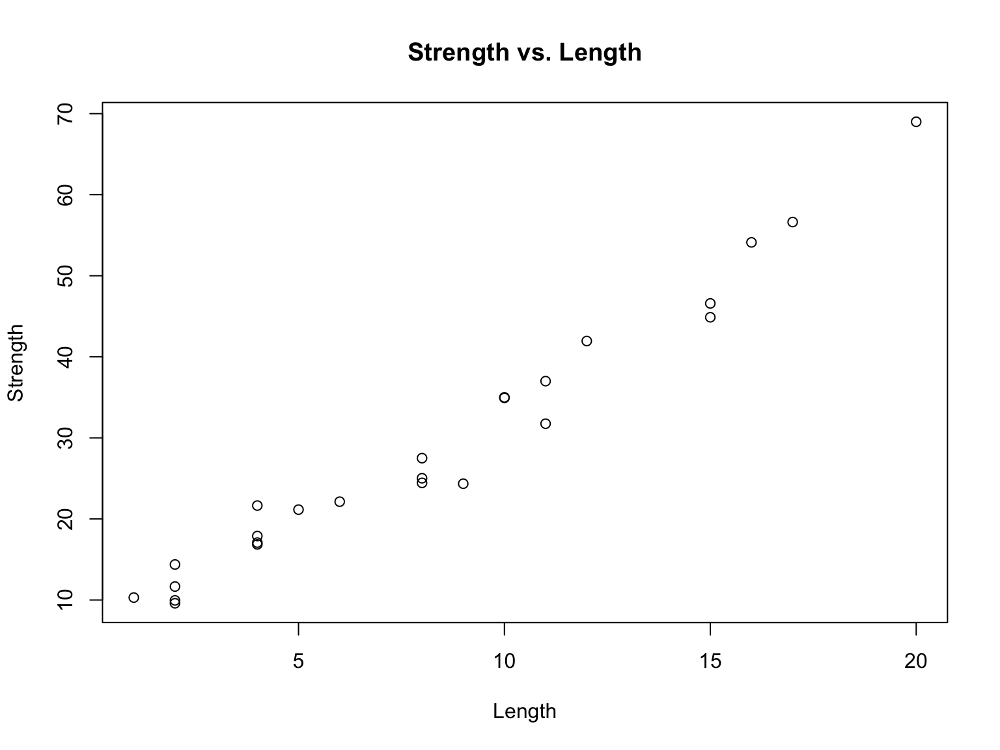

Code
require("knitr")
knitr::opts_chunk$set(
comment = "#",
fig.width=8,
fig.height=6,
cache = TRUE
)require("knitr")
knitr::opts_chunk$set(
comment = "#",
fig.width=8,
fig.height=6,
cache = TRUE
)issu <- data.frame (
driving = c(5, 2, 12, 9, 15, 6, 25, 16),
premium = c(64, 87, 50, 71, 44, 56, 42, 60)
)
y <- issu$premium
x <- issu$driving
xbar <- mean(x)
ybar <- mean(y)
n <- length(y)
plot(x,y, xlab = "Driving", ylab = "Premium")
fit.issu <- lm(y~x)
plot(x,y)
abline (fit.issu)
beta0 <- fit.issu$coefficients[1]
beta1 <- fit.issu$coefficients[2]
fitted1 <- beta0+beta1*x
fitted0 <- rep(ybar, n)
residual1 <- y - fitted1
residual0 <- y - fitted0
data.frame (y, fitted0, residual0, fitted1, residual1, diff.residual=fitted1-fitted0)Visualize the fitted line, fitted values, and residuals

Definitions of SSR, SSE, SST:
SST <- sum((y-fitted0)^2); SST# [1] 1557.5SSE <- sum ((y-fitted1)^2);SSE# [1] 639.0065SSR <- SST-SSE;SSR# [1] 918.4935SSR can be computed directly with
sum((fitted1-fitted0)^2)# [1] 918.4935Plot of Residual Sum Squares
# --- Assumed Setup Code (from your previous file) ---
# This data and model fit are needed for the calculations
# --- Assumed Setup Code (from your previous file) ---
# This data and model fit are needed for the calculations
issu <- data.frame (
driving = c(5, 2, 12, 9, 15, 6, 25, 16),
premium = c(64, 87, 50, 71, 44, 56, 42, 60)
)
y <- issu$premium
x <- issu$driving
n <- length(y)
fit.issu <- lm(y~x)
# --- End of Setup ---
# --- Calculations for ANOVA components ---
SST <- sum((y - mean(y))^2)
SSE <- sum(resid(fit.issu)^2)
SSR <- SST - SSE
df_SSR <- 1 # For simple linear regression (change from 1 to 2 parameters)
df_SSE <- n - 2
# --- Create the Plot ---
# Set plot margins to make extra space at the bottom for the df segments
par(mar = c(6, 4, 4, 2) + 0.1)
# Create the main plot, expanding x-axis to 14
plot(c(1, 2, n), c(SST, SSE, 0), type="b", pch = 19,
xlab = "Number of Parameters in Model",
ylab = "Residual Sum of Squares (RSS)",
main = "Visualizing ANOVA on the RSS Plot",
xlim = c(0, 14), # Expanded x-axis limit
ylim = c(-400, SST * 1.1), # Extend y-axis below 0
xaxt = "n" # Turn off default x-axis to draw a custom one
)
axis(1, at = c(1, 2, n), labels = c("1 (Intercept)", "2 (+ Slope)", paste(n, "(Saturated)")))
abline(h=seq(0, 2000, by=100), lty=3, col="grey")
# --- Allow drawing outside the main plot area ---
par(xpd=TRUE)
# --- Draw Repositioned Segments ---
# 1. Show SSE (blue) - at x=9
arrows(x0 = 9, y0 = 0, x1 = 9, y1 = SSE, col = "blue", code = 3, angle = 90, length = 0.1, lwd = 2)
text(x = 9, y = SSE / 2, "SSE", col = "blue", pos = 4, font = 2, cex = 1.2)
# 2. Show SSR (red) - at x=9
arrows(x0 = 9, y0 = SSE, x1 = 9, y1 = SST, col = "red", code = 3, angle = 90, length = 0.1, lwd = 2)
text(x = 9, y = (SST + SSE) / 2, "SSR", col = "red", pos = 4, font = 2, cex = 1.2)
# 3. Show df_SSE (blue) - below y=0
arrows(x0 = 2, y0 = -200, x1 = n, y1 = -200, col = "blue", code = 3, angle = 90, length = 0.1, lwd = 2)
text(x = (2 + n) / 2, y = -250, paste("df_SSE =", df_SSE), col = "blue", font = 2)
# 4. Show df_SSR (red) - below y=0
arrows(x0 = 1, y0 = -200, x1 = 2, y1 = -200, col = "red", code = 3, angle = 90, length = 0.1, lwd = 2)
text(x = 1.5, y = -250, paste("df_SSR =", df_SSR), col = "red", font = 2)
# --- NEW CODE: Add ANOVA F and p-value to top-right corner ---
# 1. Calculate the F-statistic and p-value
f_value <- (SSR/df_SSR) / (SSE/df_SSE)
p_value <- pf(f_value, df1=df_SSR, df2=df_SSE, lower.tail = FALSE)
# 2. Format the text strings for display
f_stat_text <- sprintf("F-statistic: %.2f", f_value)
p_val_text <- sprintf("p-value: %.3f", p_value)
# 3. Use legend() to create an info box on the plot
legend(
"topright", # Position of the box
legend = c(f_stat_text, p_val_text),
title = "ANOVA Results",
bty = "o", # Draw a box around the legend
cex = 0.9 # Adjust character size
)
# Reset clipping to default for any subsequent plots
par(xpd=FALSE)Coefficient of Determination: \(R^2\)
R2 <- SSR/SST; R2# [1] 0.5897229Mean Sum Squares and F statististic
f <- (SSR/1)/(SSE/(n-2)); f# [1] 8.624264p-value to assess whether the relationship exists (statistical significance measure)
pvf <- pf(f, df1=1, df2=n-2, lower.tail = FALSE); pvf# [1] 0.0260588ANOVA table
Ftable <- data.frame(df = c(1,n-2), SS=c(SSR,SSE),
MSS = c(SSR/1, SSE/(n-2)), Fstat=c(f,NA),
p.value = c(pvf, NA),
R2 = c(SSR, SSE)/SST)
Ftablefit.issu <- lm(y~x)
anova(fit.issu)# Get parameters from the original fit to use in the simulation
# Get parameters from the original fit to use in the simulation
original_fit <- lm(y~x)
intercept_H0 <- coef(original_fit)[1] # beta_0
model_sigma <- sigma(original_fit) # sigma
# Loop to generate frames for an animation
for (n.sim in 1:50) {
# Simulate a dataset where H0 is true (slope = 0)
sim.y <- intercept_H0 + rnorm(n, 0, model_sigma)
# --- Plotting Section ---
# Set up a 1x2 plot layout
par(mfrow=c(1,2))
# --- Left Plot: Scatterplot ---
fit.sim.y <- lm(sim.y~x)
plot(sim.y~x, ylim=c(0,100), main="Data Simulated Under H0 (Slope=0)")
abline(fit.sim.y,col="red", lwd=2) # Fitted line for simulated data
abline(h=mean(sim.y),col="blue") # Null model line
# --- Right Plot: RSS Plot with ANOVA Info ---
anova.fit.sim.y <- anova(fit.sim.y)
ss.sim.y <- anova.fit.sim.y$`Sum Sq`
rss.sim.y <- rev(cumsum(c(0, rev(ss.sim.y))))
num.par <- cumsum(c(1,anova.fit.sim.y$Df))
plot(rss.sim.y~num.par,xlab="Number of Parameters", ylab = "Residual Sum Squares", type ="b")
abline(v=1:25, h=(0:50)*100,lty=3,col="grey")
# --- NEW CODE: Add ANOVA table info to the right plot ---
# 1. Extract the F-statistic and p-value
f_value <- anova.fit.sim.y$"F value"[1]
p_value <- anova.fit.sim.y$"Pr(>F)"[1]
# 2. Format the text strings for display
f_stat_text <- sprintf("F-statistic: %.2f", f_value)
p_val_text <- sprintf("p-value: %.3f", p_value)
# 3. Use legend() to create an info box on the plot
legend(
"topright", # Position of the box
legend = c(f_stat_text, p_val_text),
title = "ANOVA Results",
bty = "o", # Type of box ("o" for a full box, "n" for no box)
cex = 0.9 # Character size
)
}
# --- Assumed Setup Code (from your previous file) ---
# Get parameters from the original fit to use in the simulation
original_fit <- lm(y~x)
intercept_HA <- coef(original_fit)[1] # beta_0
model_sigma <- sigma(original_fit) # sigma
slope_HA <- -2 # A specified non-zero slope for the alternative hypothesis
# Loop to generate frames for an animation
for (n.sim in 1:50) {
# Simulate a dataset where H0 is false (true slope = -2)
mean_y <- intercept_HA + slope_HA * x
sim.y <- mean_y + rnorm(n, 0, model_sigma)
# --- Plotting Section ---
# Set up a 1x2 plot layout
par(mfrow=c(1,2))
# --- Left Plot: Scatterplot ---
fit.sim.y <- lm(sim.y~x)
plot(sim.y~x, ylim=c(0,80), main="Data Simulated Under HA (Slope=-2)")
abline(fit.sim.y,col="red", lwd=2) # Fitted line for simulated data
abline(h=mean(sim.y),col="blue") # Null model line
# --- Right Plot: RSS Plot with ANOVA Info ---
anova.fit.sim.y <- anova(fit.sim.y)
ss.sim.y <- anova.fit.sim.y$`Sum Sq`
rss.sim.y <- rev(cumsum(c(0, rev(ss.sim.y))))
num.par <- cumsum(c(1,anova.fit.sim.y$Df))
plot(rss.sim.y~num.par,xlab="Number of Parameters", ylab = "Residual Sum Squares", type ="b")
abline(v=1:25, h=(0:50)*100,lty=3,col="grey")
# --- NEW CODE: Add ANOVA table info to the right plot ---
# 1. Extract the F-statistic and p-value
f_value <- anova.fit.sim.y$"F value"[1]
p_value <- anova.fit.sim.y$"Pr(>F)"[1]
# 2. Format the text strings for display
f_stat_text <- sprintf("F-statistic: %.2f", f_value)
# Use scientific notation for potentially very small p-values
p_val_text <- sprintf("p-value: %.3e", p_value)
# 3. Use legend() to create an info box on the plot
legend(
"topright", # Position of the box
legend = c(f_stat_text, p_val_text),
title = "ANOVA Results",
bty = "o", # Type of box
cex = 0.9 # Character size
)
}
This section performs a simple linear regression analysis on oxygen purity data. We will model the purity of oxygen (y) as a function of the hydrocarbon level (x).
First, we define the x (Hydrocarbon Level) and y (Purity) variables and combine them into a data frame called purity.data.
# Define the data vectors
x <- c(0.99, 1.02, 1.15, 1.29, 1.46, 1.36, 0.87, 1.23, 1.55, 1.40, 1.19,
1.15, 0.98, 1.01, 1.11, 1.20, 1.26, 1.32, 1.43, 0.95)
y <- c(90.01, 89.05, 91.43, 93.74, 96.73, 94.45, 87.59, 91.77, 99.42, 93.65,
93.54, 92.52, 90.56, 89.54, 89.85, 90.39, 93.25, 93.41, 94.98, 87.33)
# Get the number of observations
n <- length(x)
n# [1] 20# Create a data frame
purity.data <- data.frame(x = x, y = y)
head(purity.data)We fit a linear model using the lm() function and then print the detailed summary of the model, which includes coefficients, R-squared, and other statistics.
# Fit the model using the lm() function
fit <- lm(y ~ x, data = purity.data)
# Print the summary of the fit
summary(fit)#
# Call:
# lm(formula = y ~ x, data = purity.data)
#
# Residuals:
# Min 1Q Median 3Q Max
# -1.83029 -0.73334 0.04497 0.69969 1.96809
#
# Coefficients:
# Estimate Std. Error t value Pr(>|t|)
# (Intercept) 74.283 1.593 46.62 < 2e-16 ***
# x 14.947 1.317 11.35 1.23e-09 ***
# ---
# Signif. codes: 0 '***' 0.001 '**' 0.01 '*' 0.05 '.' 0.1 ' ' 1
#
# Residual standard error: 1.087 on 18 degrees of freedom
# Multiple R-squared: 0.8774, Adjusted R-squared: 0.8706
# F-statistic: 128.9 on 1 and 18 DF, p-value: 1.227e-09Here we visualize the relationship between hydrocarbon level and purity with the fitted regression line overlaid.
# Create scatter diagram and add the fitted line
plot(purity.data$x, purity.data$y,
xlab = "Hydrocarbon level (x)", ylab = "Purity (y)",
main = "Oxygen Purity vs. Hydrocarbon Level")
abline(fit, col = "red", lwd = 2)
We can compute the 95% confidence intervals for the regression coefficients and generate the ANOVA table for the model.
# Confidence intervals of the regression coefficients
confint(fit, level = 0.95)# 2.5 % 97.5 %
# (Intercept) 70.93555 77.63108
# x 12.18107 17.71389# ANOVA table
anova(fit)We will now calculate and visualize the confidence bands for the mean response and the prediction bands for new observations.
First, we create a sequence of x values to make predictions. Then, we use the predict() function to calculate the confidence and prediction intervals.
# Create a new data frame with values of x for which we want to predict/estimate
x0 <- seq(min(purity.data$x), max(purity.data$x), length = 50)
newdata <- data.frame(x = x0)
# Confidence interval for the mean response
est.mean <- predict(fit, newdata = newdata, interval = "confidence", level = 0.95)
# Prediction interval for a new observation
pred.new <- predict(fit, newdata = newdata, interval = "prediction", level = 0.95)This plot shows the fitted regression line along with the 95% confidence bands (blue dashed lines) and 95% prediction bands (red dotted lines).
# Plot the data and the fitted line
plot(purity.data$x, purity.data$y,
xlab = "Hydrocarbon level (x)", ylab = "Purity (y)",
main = "Regression Line with Confidence and Prediction Bands")
abline(fit)
# Add the confidence and prediction bands
matlines(x0, est.mean[, 2:3], col = "blue", lty = 2, lwd = 2)
matlines(x0, pred.new[, 2:3], col = "red", lty = 3, lwd = 2)
# Add a legend
legend("topleft", c("Confidence Bands", "Prediction Bands"),
col = c("blue", "red"), lty = 2:3, bty = "n")
To check the model’s assumptions, we analyze the residuals. We extract the standardized residuals and create a set of diagnostic plots.
# Extract fitted values and residuals
pred <- fitted.values(fit)
e <- resid(fit)
# Compute standardized residuals
d <- e / summary(fit)$sigma
# Create a 2x2 layout for plots
par(mfrow = c(2, 2))
# 1. Scatter plot with regression line
plot(purity.data$x, purity.data$y, xlab = "x", ylab = "y")
abline(fit)
# 2. Normal Q-Q plot of standardized residuals
qqnorm(d, main = "Normal Q-Q Plot")
qqline(d)
# 3. Standardized residuals vs. Predicted values
plot(pred, d, xlab = "Predicted values", ylab = "Standardized residuals",
main = "Residuals vs. Fits")
abline(h = 0, lty = 2)
# 4. Standardized residuals vs. Observation order
plot(1:n, d, xlab = "Observation Order", ylab = "Standardized residuals",
main = "Residuals vs. Order")
abline(h = 0, lty = 2)
This section performs a correlation analysis between the strength and length of a certain material.
We define the strength and length data and create a scatter plot to visualize their relationship.
# Define the data vectors
strength <- c(9.95, 24.45, 31.75, 35.00, 25.02, 16.86, 14.38, 9.60, 24.35,
27.50, 17.08, 37.00, 41.95, 11.66, 21.65, 17.89, 69.00, 10.30,
34.93, 46.59, 44.88, 54.12, 56.63, 22.13, 21.15)
length <- c(2, 8, 11, 10, 8, 4, 2, 2, 9, 8, 4, 11, 12, 2, 4, 4, 20, 1, 10,
15, 15, 16, 17, 6, 5)
# Plot the relationship
plot(length, strength, xlab = "Length", ylab = "Strength",
main = "Strength vs. Length")
We calculate the Pearson correlation coefficient and perform a formal hypothesis test for the correlation.
# Calculate the correlation coefficient
cor(strength, length)# [1] 0.9818118# Perform the correlation test
cor.test(strength, length)#
# Pearson's product-moment correlation
#
# data: strength and length
# t = 24.801, df = 23, p-value < 2.2e-16
# alternative hypothesis: true correlation is not equal to 0
# 95 percent confidence interval:
# 0.9585414 0.9920735
# sample estimates:
# cor
# 0.9818118The results show a strong positive correlation between length and strength, and the p-value is highly significant, indicating that this relationship is not due to random chance.